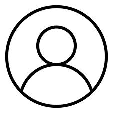
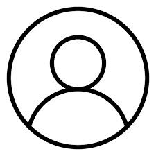
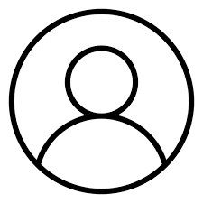
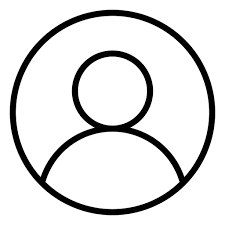

Nós somos um grupo de estudantes formados por 3 integrantes, Bruna, Elyziee, Mariana, Como ficamos sem ideia de nome pegamos nossas iniciais e criamos o "B.E.M"
qui neste site iremos postar aparetos eletrônicos que criamos em sala de aula, sendo desde algo como um semáforo com o arduino, até coisas mais interessantes como dois semáforos com arduino!
Bom, nós do BEM, estamos estudando a como progamarmos em uma placa arduino, e agora abaixo você verá exemplos de projetos que criamos até o momento

Como podemos ali em cima, temos um sistema de um semaforo simples utilizando uma placa arduino, sua função é a mesma que um semaforo.

Ali em cima temos um sistema de um buzzer utilizando uma placa arduino, sua função é fazer sons, e nosso grupo escolheu usar a música tema do "Super Mario Bros".

Como vimos na foto a cima utilizando uma placa arduinos nós programamos a Super maquina, sua função é nada mais nada menos que...Ser uma super maquina(quem poderia crer)